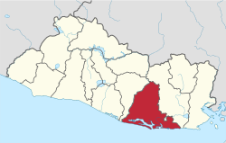

Su cabecera (ciudad principal) es Usulután que cuenta con una población de 73 064 habitantes según censo del 2007, ocupando la posición número 15 en población. Sus lugares turísticos más importantes son el volcán de Usulután, la laguna de Alegría en el volcán Tecapa y la bahía de Jiquilisco pero la ciudad más pintoresca es la Ciudad de Jucuapa que cuenta con el Cerro el Tigre, la frescura y el sabor del oriente con el incomparable paisaje de sus cafetales y el calor de su gente hospitalaria que hacen de Jucuapa una ciudad única al norte del departamento de Usulután con acceso en la parte Norte por la autopista Panamericana a solo 118 kilómetros de Ciudad Capital San Salvador y por el sector Sur por la Autopista Litoral cruzando el Municipio de Santa Elena.
Como toda la llanura costera, el clima de la zona está comprendido dentro de la clasificación climática de Sabana Tropical Caliente del climatólogo Koppen, o tierra caliente, según Sapper Laver. La precipitación media anual es de 1949 milímetros y está distribuida principalmente entre los meses de mayo a octubre con un descenso típico en los meses de julio y agosto. La temperatura media varía de 25.9° a 28.1 °C, con máxima de 36.3 °C (promedio mensual) registradas en marzo, y mínima de 19.1 °C registrada en diciembre.
